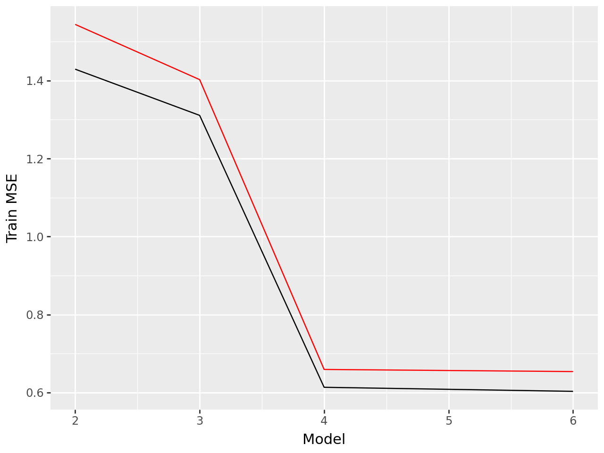

Requirement already satisfied: palmerpenguins in /usr/local/lib/python3.10/dist-packages (0.1.4)
Requirement already satisfied: pandas in /usr/local/lib/python3.10/dist-packages (from palmerpenguins) (2.2.2)
Requirement already satisfied: numpy in /usr/local/lib/python3.10/dist-packages (from palmerpenguins) (1.26.4)
Requirement already satisfied: python-dateutil>=2.8.2 in /usr/local/lib/python3.10/dist-packages (from pandas->palmerpenguins) (2.8.2)
Requirement already satisfied: pytz>=2020.1 in /usr/local/lib/python3.10/dist-packages (from pandas->palmerpenguins) (2024.2)
Requirement already satisfied: tzdata>=2022.7 in /usr/local/lib/python3.10/dist-packages (from pandas->palmerpenguins) (2024.2)
Requirement already satisfied: six>=1.5 in /usr/local/lib/python3.10/dist-packages (from python-dateutil>=2.8.2->pandas->palmerpenguins) (1.16.0)
species
island
bill_length_mm
bill_depth_mm
flipper_length_mm
body_mass_g
sex
year
0
Adelie
Torgersen
39.1
18.7
181.0
3750.0
male
2007
1
Adelie
Torgersen
39.5
17.4
186.0
3800.0
female
2007
2
Adelie
Torgersen
40.3
18.0
195.0
3250.0
female
2007
3
Adelie
Torgersen
NaN
NaN
NaN
NaN
NaN
2007
4
Adelie
Torgersen
36.7
19.3
193.0
3450.0
female
2007
Let’s use the other variables to predict bill_depth_mm. Prepare your data and fit the following models on a training dataset subset of the entire dataset:
Four different models, each containing a different set of predictor variables
Create a plot like the right plot of Fig 1. in our Model Validation chapter with the training and test error plotted for each of your four models.
X = penguins.drop('bill_depth_mm', axis =1)y = penguins['bill_depth_mm']
X_train, X_test, y_train, y_test = train_test_split(X, y, test_size=0.25)
from sklearn.compose import ColumnTransformerct1 = ColumnTransformer( [ ("dummify", OneHotEncoder(sparse_output =False), ["sex"]), ("standardize", StandardScaler(), ["flipper_length_mm"]) ], remainder ="drop"#Anything that isnt in the columns Bldg Type, Gr Liv Area, TotRms AbvGrd you drop all the other columns in the dataframe.)lr_pipeline = Pipeline( [("preprocessing", ct1), ("linear_regression", LinearRegression())])pipeline1_fit = lr_pipeline.fit(X_train, y_train)
ct1 = ColumnTransformer( [ ("dummify", OneHotEncoder(sparse_output =False), ["sex"]), ("standardize", StandardScaler(), ["flipper_length_mm", "body_mass_g"]) ], remainder ="drop"#Anything that isnt in the columns Bldg Type, Gr Liv Area, TotRms AbvGrd you drop all the other columns in the dataframe.)lr_pipeline = Pipeline( [("preprocessing", ct1), ("linear_regression", LinearRegression())])pipeline1_fit = lr_pipeline.fit(X_train, y_train)
ct1 = ColumnTransformer( [ ("dummify", OneHotEncoder(sparse_output =False), ["sex", "species"]), ("standardize", StandardScaler(), ["flipper_length_mm", "body_mass_g"]) ], remainder ="drop"#Anything that isnt in the columns Bldg Type, Gr Liv Area, TotRms AbvGrd you drop all the other columns in the dataframe.)lr_pipeline = Pipeline( [("preprocessing", ct1), ("linear_regression", LinearRegression())])pipeline1_fit = lr_pipeline.fit(X_train, y_train)
ct1 = ColumnTransformer( [ ("dummify", OneHotEncoder(sparse_output =False), ["sex", "species", "island"]), ("standardize", StandardScaler(), ["flipper_length_mm", "body_mass_g", "bill_length_mm"]) ], remainder ="drop"#Anything that isnt in the columns Bldg Type, Gr Liv Area, TotRms AbvGrd you drop all the other columns in the dataframe.)lr_pipeline = Pipeline( [("preprocessing", ct1), ("linear_regression", LinearRegression())])pipeline1_fit = lr_pipeline.fit(X_train, y_train)
#Plot a line graph with x axis "Model" and y axis "MSE" with 2 lines one for Train MSE and one for Test MSEfrom plotnine import ggplot, aes, geom_line, labs(ggplot(df_errors, aes(x='Model', y='Train MSE')) + geom_line() + geom_line(aes(y='Test MSE'), color='red'))

Based on our plot, Model 4 is the best because it has the lowest MSE